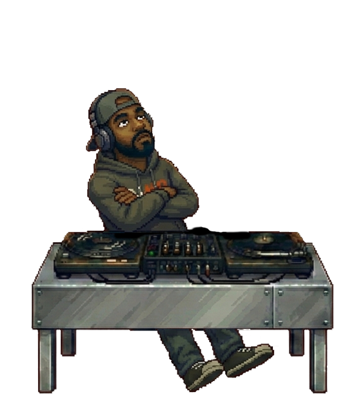

Spotify AI DJ Signal Inspector
Compare Spotify playback metadata with the moments you hear AI DJ commentary. Read-only. No room changes, no audio capture.
1. Configure a session
Uses the Spotify session from Pocket DJ in the same browser profile and website origin. If disconnected, return to Pocket DJ, connect, then open this page again. No new Spotify redirect URL is needed.
2. Mark what you hear
Click the appropriate marker at the exact moment you hear the event. These timestamps are the ground truth for the comparison.
Downloads contain playback metadata and marker timestamps, never access/refresh tokens, device IDs, or device names. They may contain song names, artists, and listening history, so review before sharing.
Test procedure
- Connect Spotify through Pocket DJ in this browser if needed.
- Start Spotify's AI DJ and play a normal song. Select the actual playback source above.
- Click Start recording; collect at least 15 seconds of normal music as a baseline.
- When the AI DJ speaks, click DJ starts talking; click DJ stops talking when it ends.
- Click Music audible as the next song plays. Repeat for at least three DJ commentary segments.
- Stop, download JSON, and compare the samples around each marker. Repeat for other playback sources if useful.
Each sample requests both /me/player and /me/player/currently-playing. Calls are non-overlapping, and recording automatically backs off when Spotify sends HTTP 429. Keep this tab in the foreground for the best timestamp resolution.
Live mini DJ monitor
Experimental state inference from Spotify playback metadata. No microphone or transcription.

Start recording to classify the live playback state. A missing track item is only a speech candidate, not proof.
Manual markers do not influence the automatic detector.
Timeline (newest first)
| Local time | Type | Observation | Playback source |
|---|---|---|---|
| No samples yet. | |||
Highlighted samples indicate observable metadata changes, not confirmed AI DJ speech. Match them to your manual markers.
Latest API comparison
Start recording to inspect field values and the complete set of returned field names.
The inspector preserves the names of top-level, item, context, actions, and device fields, plus safe categorical values. It intentionally does not save complete raw API payloads.